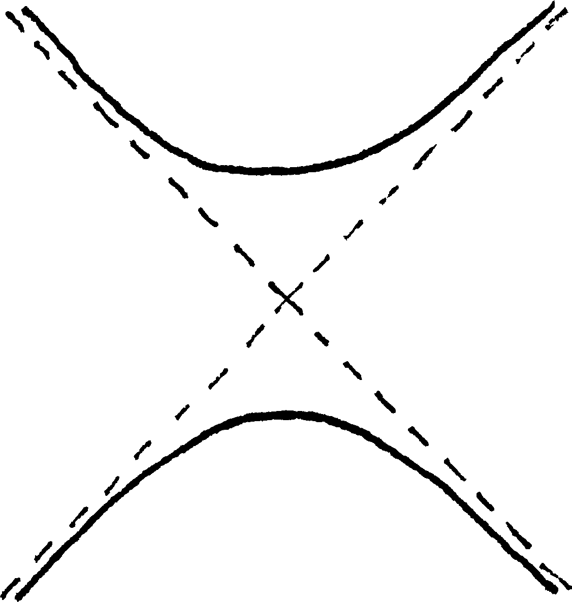
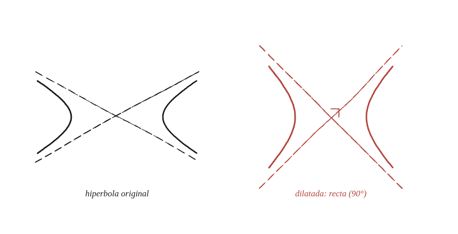

Per què tota hipèrbola és una dilatació d'una hipèrbola rectangular?

Un angle que depèn de la forma
Les dues asímptotes d'una hipèrbola es tallen formant un angle que depèn dels valors concrets de a i b —no és sempre el mateix. Quan aquest angle és de 90°, la hipèrbola es diu recta (o rectangular). La pregunta demana trobar quina dilatació converteix qualsevol hipèrbola en una d'aquestes.
Per què cal un factor diferent a cada eix
A les Qüestions 32 i 77, la dilatació escalava una figura sencera pel mateix factor en totes direccions —una còpia reduïda o ampliada, sense canviar-ne la forma. Aquí, en canvi, cal un factor diferent per a l'eix horitzontal i per al vertical: només així es pot canviar l'angle de les asímptotes sense simplement fer la figura més gran o més petita.
Dividir cada eix pel seu propi factor
Partint de x²/a² − y²/b² = 1, es defineixen dues noves coordenades X=x/a i Y=y/b —dividir l'eix horitzontal per a, el vertical per b, cadascun pel seu propi valor. Substituint a l'equació original: X² − Y² = 1, exactament l'equació d'una hipèrbola recta, amb asímptotes Y=±X (que formen 90° entre si, ja que tenen pendents +1 i −1, perpendiculars).

El factor de cada eix
La dilatació que ho aconsegueix és de factor 1/a en horitzontal i 1/b en vertical —dividir cada eix pel seu propi semieix. Amb a=b (el cas particular d'una hipèrbola ja rectangular), aquesta dilatació es converteix en la mateixa escala per als dos eixos, i la figura no canvia de forma, només de mida: el cas anisòtrop conté el cas isòtrop de les Qüestions 32 i 77 com a situació particular.
La dilatació de factor 1/a en horitzontal i 1/b en vertical converteix qualsevol hipèrbola x²/a²−y²/b²=1 en la hipèrbola rectangular X²−Y²=1, d'asímptotes perpendiculars. A diferència de la dilatació isòtropa de les Qüestions 32 i 77 (el mateix factor a totes direccions), aquí calen dos factors diferents perquè és precisament aquesta diferència la que canvia l'angle entre les asímptotes.
Comprovació
a=4, b=3: l'equació x²/16−y²/9=1 esdevé X²−Y²=1 amb X=x/4, Y=y/3. Comprovat amb el punt x=4√2, y=3: satisfà l'original (32/16−9/9=2−1=1) i, un cop dividit, X=√2, Y=1 satisfà la recta (2−1=1).